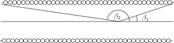

2 Engineering Example 3
2.1 Magnetic flux
Introduction
The magnitude of the magnetic flux density on the axis of a solenoid, as in Figure 13, can be found by the integral:
where is the permeability of free space ( ), is the number of turns and is the current.
Figure 13:

Problem in words
Predict the magnetic flux in the middle of a long solenoid.
Mathematical statement of the problem
We assume that the solenoid is so long that and so that
Mathematical analysis
The factor can be taken outside the integral i.e.
Interpretation
The magnitude of the magnetic flux density at the midpoint of the axis of a long solenoid is predicted to be approximately i.e. proportional to the number of turns and proportional to the current flowing in the solenoid.